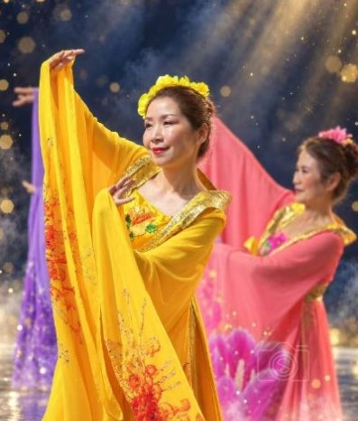
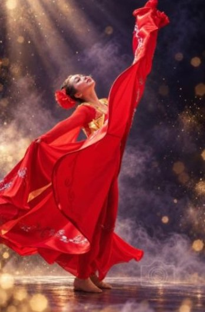
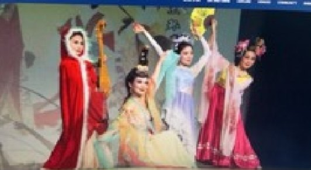
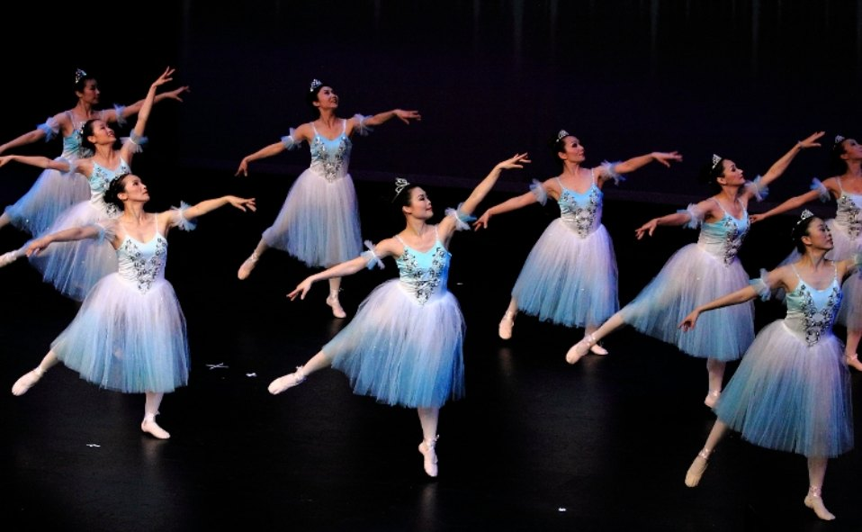
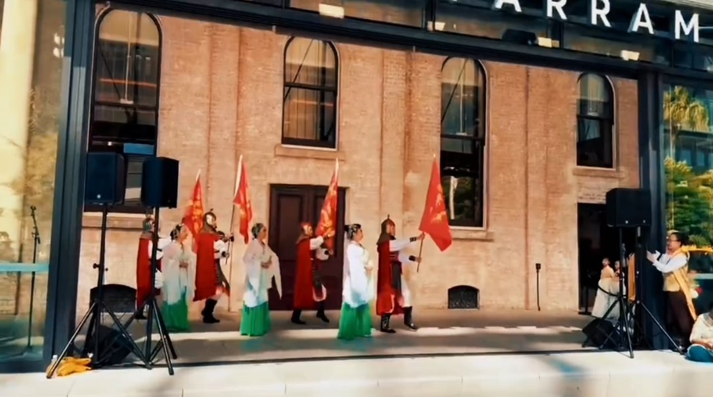

Sydney Chinese Dance Group presents
Dance Rhythms of the Orient
Flowing silk sleeves, fans and dazzling costumes. Sydney Chinese Dance brings a full evening of classical and folk Chinese dance to two Sydney theatres. Led by Jing Yuan (袁菁), with Grace Lei Zhang among the cast. Come and spot her on stage!
Shows
Reservations open
Show 1 · Bankstown
DateThu 18 Feb 2027
Time7:30pm
TicketsStandard $30
Booth $35
Booth $35
The yellow booths 1-3A and 1-3B in the middle are $35. All other seats are $30. Final prices are set by the club.
Reserve this show · WhatsApp Grace
Reservations open
Show 2 · Belmore
DateSun 28 Feb 2027
Time4:00pm (doors 3:30)
TicketsTBA
Reserve this show · WhatsApp Grace
How to reserve
- Reserve with GraceTap “Reserve this show” on WhatsApp with your name and number of tickets. WeChat: leigracezhang.
- Collected as a groupGrace passes the list to Jing Yuan, and the dance group collects tickets from the club in one batch (10, 20 or more).
- We let you knowGrace then contacts you personally about payment and getting your tickets.
The shows are presented by the clubs. Prices and ticket arrangements are subject to the club’s final confirmation.
Official posters

Highlights





About the group
Sydney Chinese Dance is led by Jing Yuan (袁菁). Members from across Sydney train in classical Chinese, folk and ballet technique, and perform at community events and festivals.
Questions? Ask Grace